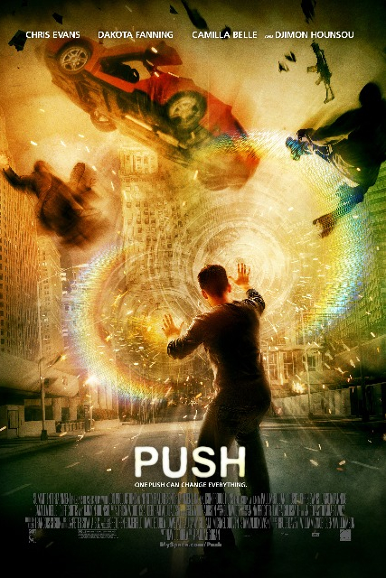
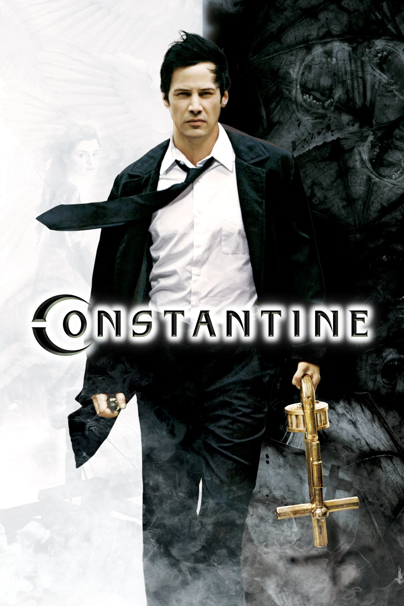
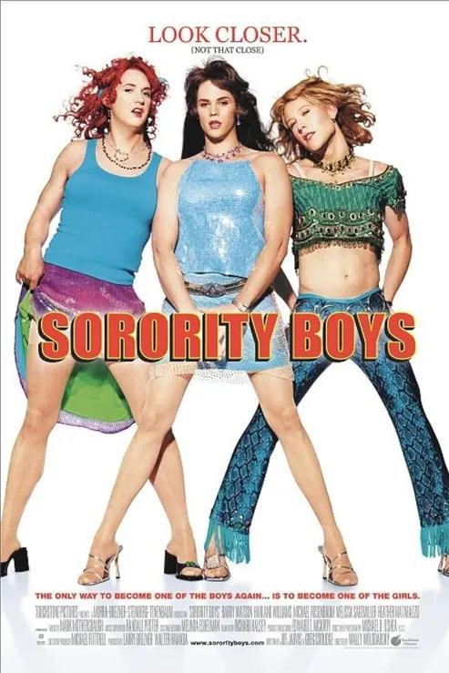
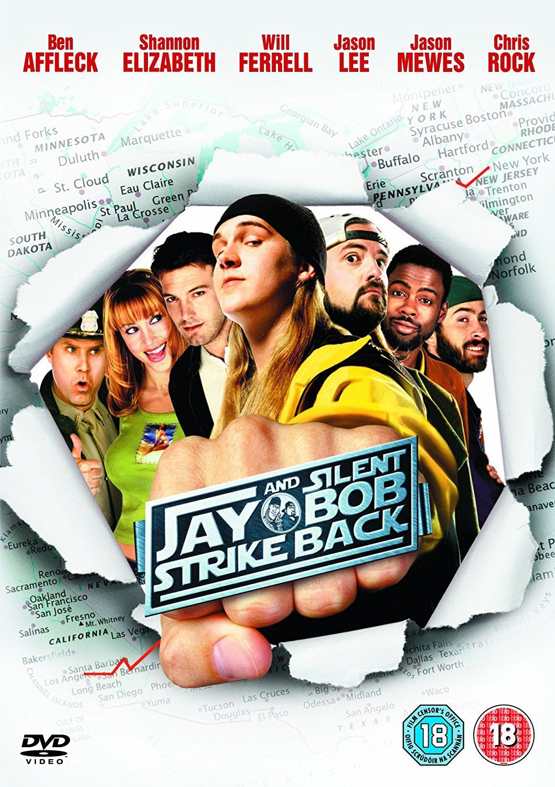
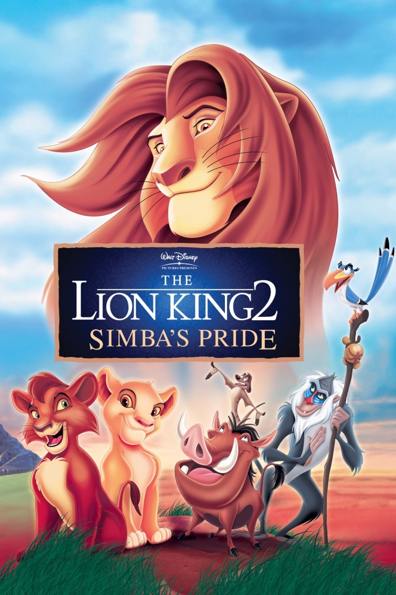

Knives Out [series]
Titles: Knives Out, Glass Onion: A Knives Out Mystery, Wake Up Dead Man: A Knives Out Mystery
Years: 2019, 2022, 2025
Runtimes: 130 min, 139 min, 144 min
Genre: Cerebral Crime, Existential Drama, Dark Comedy


Titles: Knives Out, Glass Onion: A Knives Out Mystery, Wake Up Dead Man: A Knives Out Mystery
Years: 2019, 2022, 2025
Runtimes: 130 min, 139 min, 144 min
Genre: Cerebral Crime, Existential Drama, Dark Comedy
Years: 2018, 2021, 2024
Genre: Intelligent Action, Magical Realism, Surreal Adventure
Runtime: 112 mins, 97 min, 109 min

Year: 2024
Genre: Intelligent Action, Cerebral Crime, War
Runtime: 122 min

Year: 2023
Genre: Existential Drama, Epic
Runtime: 180 min

Year: 2022
Genre: Dark Comedy, Surreal Adventure, Magical Realism
Runtime: 139 min

Year: 2020
Genre: Existential Drama, Dystopian Sci-Fi, Magical Realism
Runtime: 124 min

Year: 2020
Genre: Intelligent Action, Dystopian Sci-Fi, Surreal Adventure
Runtime: 150 min

Year: 2019
Genre: Intelligent Action, Dark Comedy, Cerebral Crime
Runtime: 113 min

Year: 2018
Genre: Intelligent Action, Psychological Thriller, Cerebral Crime
Runtime: 140 min

Year: 2015
Genre: Intelligent Action, Male Camaraderie, Dark Comedy
Runtime: 116 min

Titles: Alien, Aliens, Alien³, Alien vs. Predator, Prometheus
Years: 1979, 1986, 1992, 1997, 2004, 2012
Runtimes: 117 min, 137 min, 114 min, 109 min, 101 min, 124 min
Genre: Psychological Thriller, Dystopian Sci-Fi, Existential Drama

Year: 2012
Genre: Dystopian Sci-Fi, Dark Comedy, Magical Realism
Runtime: 99 min

Year: 2012
Genre: Surreal Adventure, Comedy, Romance, Existential Drama
Runtime: 98 min

Year: 2011
Genre: Psychological Thriller, Intelligent Action
Runtime: 105 min

Year: 2011
Genre: Magical Realism, Psychological Thriller, Surreal Adventure
Runtime: 110 min

Year: 2010
Genre: Action, Magical Realism, Romance
Runtime: 112 min

Year: 2010
Genre: Intelligent Action, Dystopian Sci-Fi, Psychological Thriller
Runtime: 148 min

Year: 2009
Genre: Sci-Fi Action, Magical Realism, Psychological Thriller
Runtime: 111 min

Year: 2009
Genre: Psychological Drama, Experimental, Surreal
Runtime: 161 min
Trailer has massive spoilers

Year: 2007
Genre: Comedy, Male Camaraderie, Romance
Runtime: 113 min

Year: 2006
Genre: Existential Drama, Dark Comedy, Dystopian Sci-Fi
Runtime: 84 min

Year: 2006
Genre: Dark Comedy, Crime, Psychological Thriller
Runtime: 95 min

Year: 2006
Genre: Mystery, Romance
Runtime: 110 min

Year: 2005
Genre: Existential Drama, Cerebral Crime, Intelligent Action
Runtime: 111 min

Year: 2005
Genre: Existential Drama, Psychological Thriller, Dystopian Sci-Fi
Runtime: 132 min

Year: 2005
Genre: High-Stakes Action, Cerebral Crime, Existential Drama
Runtime: 122 min

Year: 2005
Genre: Neo-Noir, Crime Thriller, Stylised Action
Runtime: 124 min
Year: 2005
Genre: High-Stakes Action, Romance
Runtime: 120 min

Year: 2005
Genre: Intelligent Action, Existential Drama, Psychological Thriller
Runtime: 121 min

Year: 2004
Genre: Mystery, Psychological Thriller, Cerebral Crime
Runtime: 96 min

Year: 2003
Genre: Existential Drama, Psychological Thriller
Runtime: 178 min

Year: 2003
Genre: Magical Realism, Psychological Thriller
Runtime: 102 min

Year: 2003
Genre: Action, Dark Fantasy, Dystopian Sci-Fi
Runtime: 121 min

Year: 2003
Genre: Dystopian Sci-Fi, Surreal Adventure, Existential Drama
Runtime: 102 min

Year: 2003
Genre: Magical Realism, High-Stakes Action, Surreal Adventure
Runtime: 110 min

Year: 2002
Genre: Adventure
Runtime: 83 min

Year: 2002
Genre: Male Camaraderie, Comedy, Romance
Runtime: 124 min

Year: 2002
Genre: Intelligent Action, Romance, Adventure
Runtime: 124 min

Year: 2001
Genre: Comedy, Male Camaraderie, Crime
Runtime: 100 min

Year: 2001
Genre: Comedy, Male Camaraderie, Satire
Runtime: 144 min

Year: 2001
Genre: Animated Fantasy, Adventure, Family
Runtime: 125 min

Year: 2000
Genre: Crime, Existential Drama
Runtime: 102 min

Year: 2000
Genre: Intelligent Action, Male Camaraderie, Dark Comedy
Runtime: 102 min

Year: 2000
Genre: Existential Drama, Romance
Runtime: 98 min

Year: 1999
Genre: Dystopian Sci-Fi, Male Camaraderie, Psychological Thriller
Runtime: 139 min

Year: 1999, 2003, 2003
Genre: Intelligent Action, Dystopian Sci-Fi, Magical Realism
Runtime: 138 min

Year: 1999
Genre: Dark Comedy, Existential Drama, Dystopian Sci-Fi
Runtime: 113 min

Year: 1999
Genre: Existential Drama
Runtime: 122 min

Year: 1999
Genre: Drama, Romance
Runtime: 97 min

Year: 1999
Genre: High-Stakes Action, Adventure, Horror
Runtime: 125 min

Year: 1998
Genre: Dark Comedy, Existential Drama, Dystopian Sci-Fi
Runtime: 103 min

Year: 1998
Genre: Intelligent Action, Male Camaraderie, Cerebral Crime
Runtime: 107 min

Year: 1998
Genre: Dark Comedy, Male Camaraderie, Surreal Adventure
Runtime: 118 min

Year: 1998
Genre: High-Stakes Action, Dystopian Sci-Fi, Psychological Thriller
Runtime: 132 min

Year: 1998
Genre: Surreal Adventure, Musical Drama, Romance
Runtime: 81 min

Year: 1997
Genre: Animated Adventure, Musical Fantasy, Family Comedy
Runtime: 93 min

Year: 1997
Genre: Magical Realism, Surreal Adventure, Existential Drama
Runtime: 134 min

Year: 1997
Genre: Animated Musical, Surreal Adventure, Family
Runtime: 94 min

Year: 1995
Genre: Cerebral Crime, Action, Magical Realism
Runtime: 121 min

Year: 1995
Genre: Animated Adventure, Family, Existential Drama
Runtime: 78 min

Year: 1994
Genre: Comedy, Cerebral Crime, Detective Parody
Runtime: 86 min

Year: 1994
Genre: Family Comedy, Slapstick, Male Camaraderie
Runtime: 82 min

Year: 1993
Genre: Surreal Adventure, Drama
Runtime: 93 min

Year: 1993
Genre: Comedy, Family
Runtime: 91 min

Year: 1989
Genre: Surreal Adventure, Dystopian Sci-Fi
Runtime: 108 min

Year: 1988
Genre: Surreal Adventure, Family, Drama
Runtime: 69 min

Year: 1986
Genre: Surreal Adventure, Fantasy, Musical
Runtime: 87 min

Year: 1984
Genre: Dystopian Sci-Fi, Existential Drama, Psychological Thriller
Runtime: 113 min

Year: 1983
Genre: Dark Comedy, Adventure, Male Camaraderie
Runtime: 96 min

Year: 1982
Genre: Dystopian Sci-Fi, Psychological Thriller, Existential Drama
Runtime: 117 min

Year: 1982
Genre: Musical, Male Camaraderie, Romance
Runtime: 114 min

Up in Smoke, Cheech & Chong's Nice Dreams, Things Are Tough All Over, Cheech & Chong's The Corsican Brothers
Year: 1978, 1981, 1982, 1984
Genre: Stoner Comedy, Sketch Comedy, Surreal Adventure
Runtimes: 86 min, 88 min, 90 min, 88 min

And Now for Something Completely Different, Monty Python and the Holy Grail, Life of Brian
Year: 1971, 1975, 1979
Genre: Absurdist Comedy, Satire, Sketch Comedy
Runtimes: 88 min, 91 min, 94 min

Year: 1973
Genre: Surreal Adventure, Comedy, Musical
Runtime: 83 min

Year: 1963
Genre: Animated Adventure, Surreal Adventure, Magical Realism
Runtime: 79 min

Year: 1951
Genre: Animated Fantasy, Musical, Family
Runtime: 75 min

Year: 1946
Genre: Film Noir, Mystery, Cerebral Crime
Runtime: 114 min

Year: 1940
Genre: Animated Musical, Fantasy, Experimental Film
Runtime: 124 min
No movies found for this filter.
So there are two underlying themes in what I watch.